Cara pakai
aplikasi latihan
Panduan ini untuk kamu yang baru pertama kali membuka aplikasi. Setiap gambar diberi tanda angka merah. Penjelasannya ada tepat di bawah gambar, dengan angka yang sama.
Pilih mata kuliah
Halaman pertama berisi daftar mata kuliah semester 1 dan ringkasan progresmu.
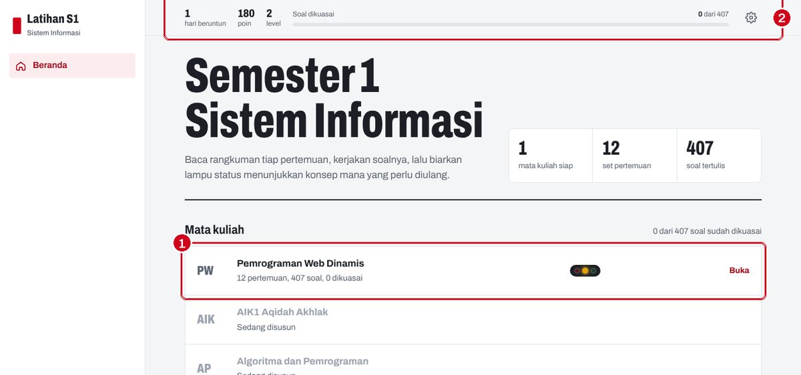
- 1Klik mata kuliah yang mau dipelajari. Mata kuliah berwarna abu-abu masih disusun.
- 2Bilah atas selalu tampil: hari beruntun, poin, level, dan jumlah soal yang sudah kamu kuasai.
- 3Menu Cara pakai membuka halaman ini lagi kapan saja.
Ikuti jalur belajar
Jalur belajar berisi pertemuan secara berurutan, ditutup dengan simulasi ujian.
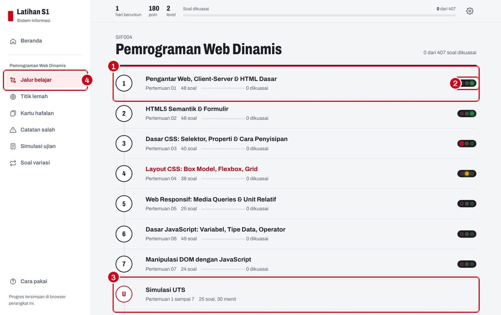
- 1Klik satu pertemuan untuk membuka rangkuman dan latihannya.
- 2Lampu status: merah berarti lemah, kuning sedang, hijau kuat. Lampu mati berarti belum dicoba.
- 3Simulasi UTS dan UAS ada di antara pertemuan, dengan batas waktu 30 menit.
- 4Menu kiri (di ponsel: menu bawah) berisi fitur lain: titik lemah, kartu hafalan, catatan salah, simulasi, dan soal variasi.
Baca rangkuman, lalu latihan
Setiap pertemuan dibuka dengan rangkuman singkat dari modul dan video.
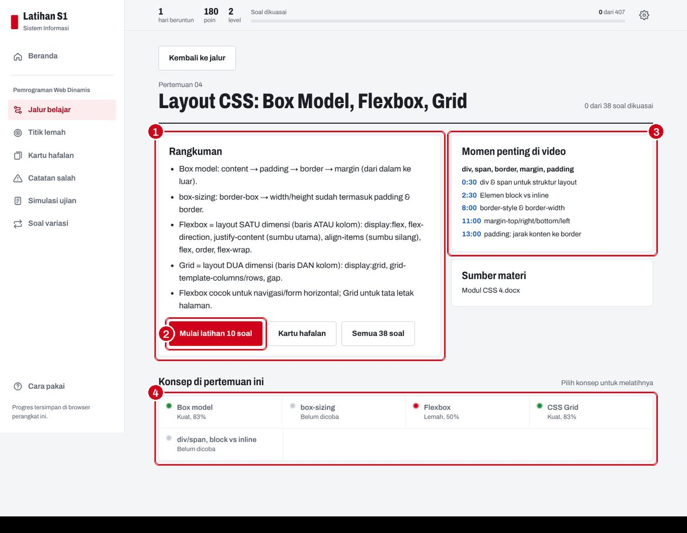
- 1Baca rangkuman sampai selesai sebelum mengerjakan soal.
- 2Tekan Mulai latihan 10 soal. Soal dipilih otomatis, mengutamakan konsep yang masih lemah.
- 3Momen penting di video: klik menitnya untuk langsung melompat ke bagian itu di YouTube.
- 4Daftar konsep: klik salah satu untuk latihan khusus konsep tersebut.
Mengerjakan soal
Satu layar menampilkan satu soal. Urutan pilihan jawaban diacak setiap kali.
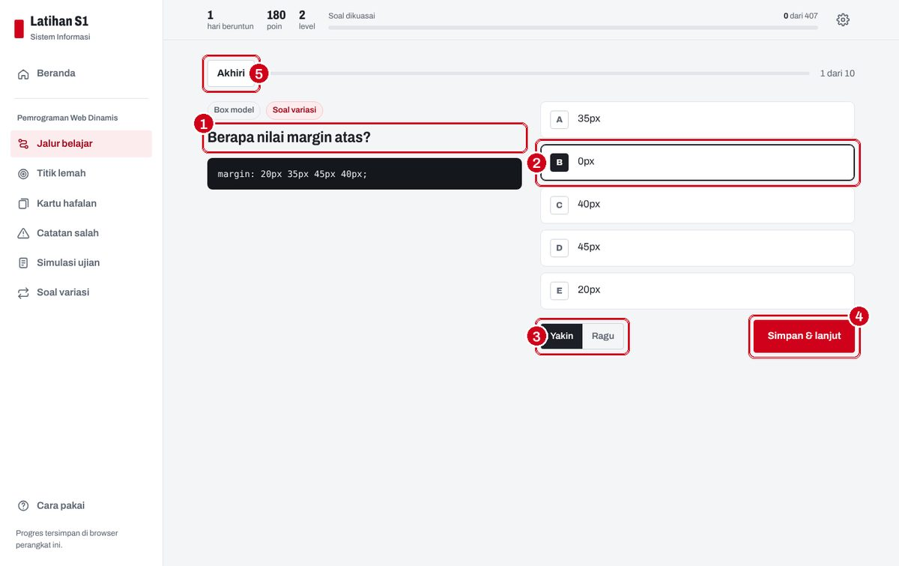
- 1Baca soalnya. Kotak gelap berisi potongan kode yang perlu kamu baca.
- 2Klik satu pilihan jawaban.
- 3Pilih Ragu jika kamu menebak. Jawaban benar yang ditandai ragu dihitung setengah, dan soalnya akan muncul lagi.
- 4Tekan Simpan & lanjut untuk ke soal berikutnya.
- 5Tombol Akhiri menghentikan sesi dan langsung menampilkan hasil.
Membaca hasil dan pembahasan
Setelah sesi selesai, kamu melihat skor dan pembahasan setiap soal.
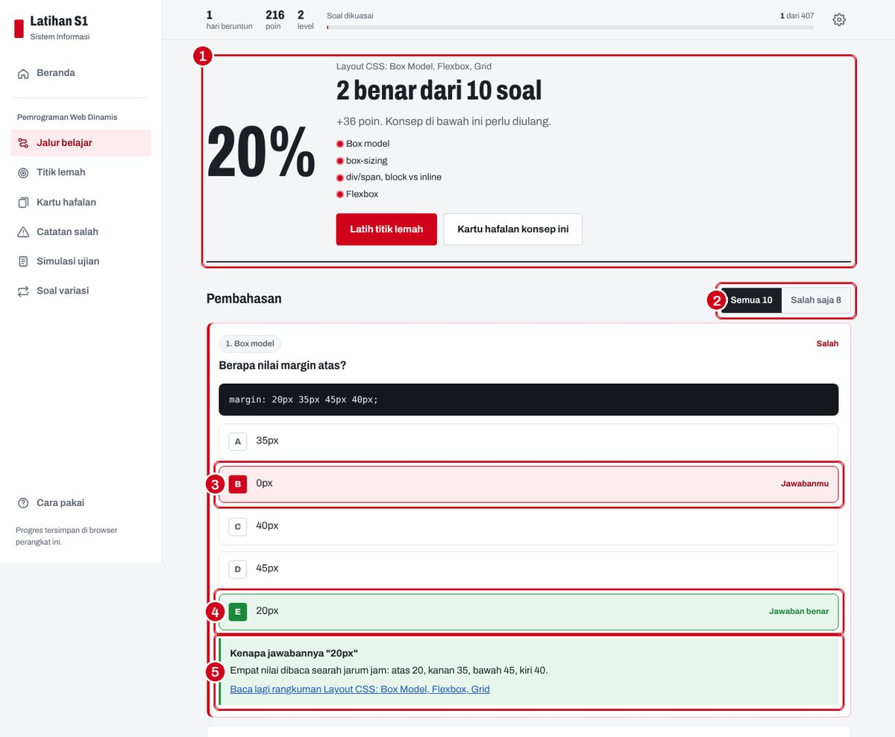
- 1Skor, poin yang didapat, dan daftar konsep yang perlu diulang. Tombol Latih titik lemah langsung membuat latihan dari konsep itu.
- 2Pilih Salah saja untuk menampilkan soal yang salah saja.
- 3Kotak merah adalah jawabanmu yang salah.
- 4Kotak hijau adalah jawaban yang benar.
- 5Bagian Kenapa jawabannya … menjelaskan alasannya, dengan tautan ke rangkuman pertemuan terkait.
Temukan titik lemah
Halaman ini mengumpulkan konsep yang paling perlu kamu latih.
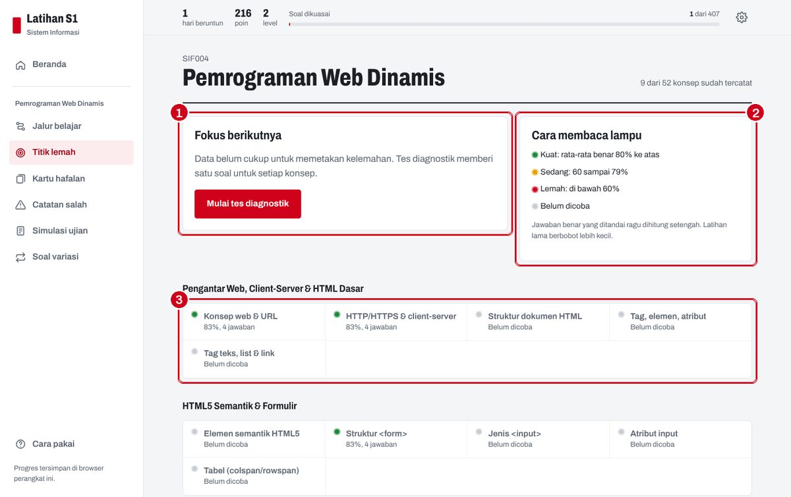
- 1Fokus berikutnya: daftar konsep terlemah. Kalau datanya belum cukup, mulai dari Tes diagnostik (satu soal per konsep).
- 2Penjelasan arti warna lampu.
- 3Peta semua konsep per pertemuan. Klik satu konsep untuk melatihnya.
Hafalkan dengan kartu
Kartu hafalan berisi istilah dan rumus penting. Ketuk kartu untuk melihat jawabannya.
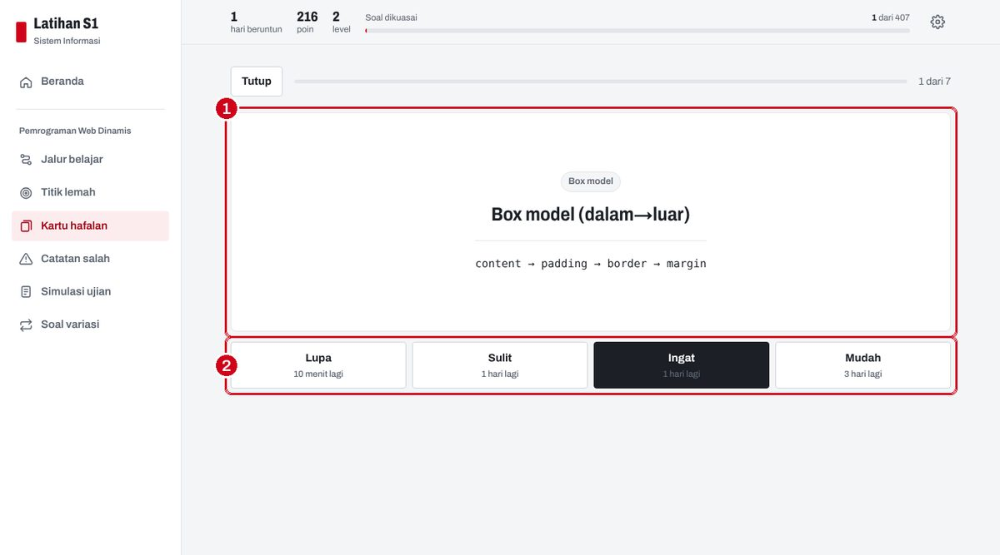
- 1Ketuk kartu atau tekan spasi untuk membalik.
- 2Nilai dirimu sendiri: Lupa, Sulit, Ingat, atau Mudah. Kartu yang sulit akan muncul lagi lebih cepat.
Soal variasi tanpa batas
Soal hitungan dan kode yang angkanya berubah setiap kali, cocok untuk latihan berulang.
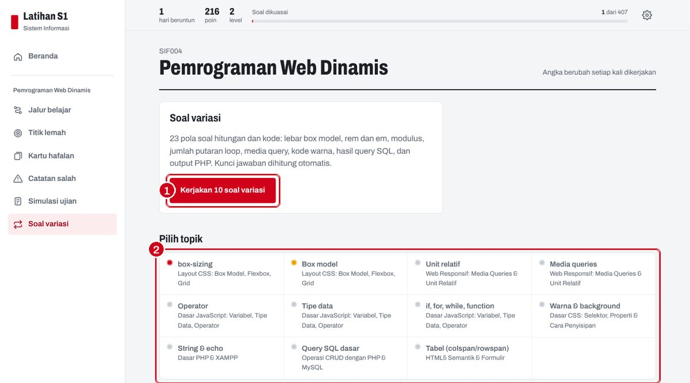
- 1Kerjakan 10 soal variasi campuran.
- 2Atau pilih satu topik, misalnya box model atau query SQL.
Simulasi ujian
Latihan dengan batas waktu. Pembahasan baru ditampilkan setelah selesai.
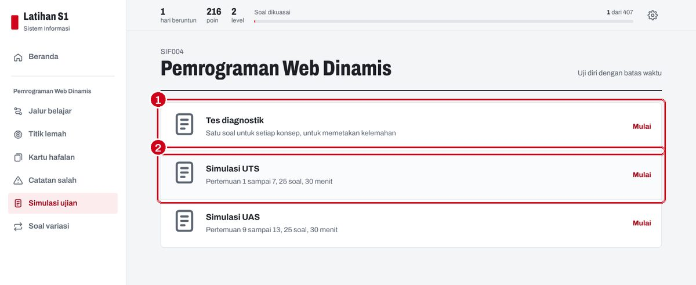
- 1Tes diagnostik untuk memetakan kelemahan di awal.
- 2Simulasi UTS: 25 soal dari pertemuan 1 sampai 7 dalam 30 menit. Simulasi UAS untuk pertemuan 9 sampai 13.
Pengaturan dan cadangan progres
Buka lewat ikon roda gigi di kanan atas.
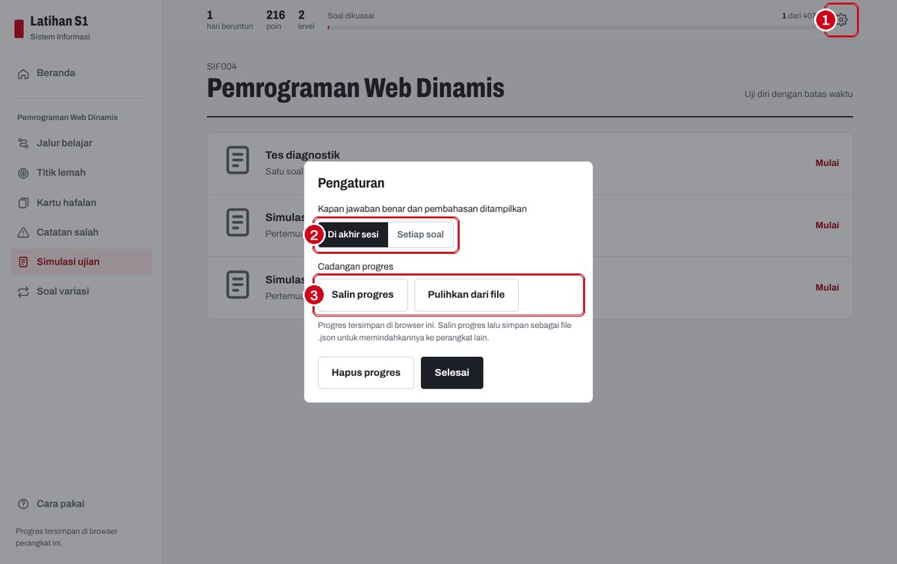
- 1Ikon roda gigi.
- 2Pilih kapan pembahasan muncul: di akhir sesi (bawaan) atau setiap soal.
- 3Salin progres untuk cadangan, lalu Pulihkan dari file di perangkat lain.
Pasang di ponsel
Aplikasi berjalan di browser ponsel. Tambahkan ke layar utama supaya bisa dibuka seperti aplikasi biasa.
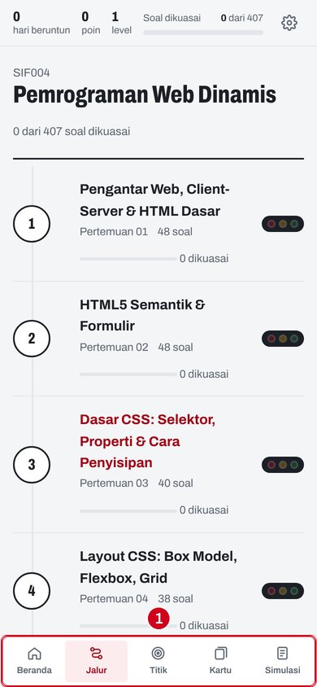
- 1Di ponsel, menu pindah ke bagian bawah layar: Beranda, Jalur, Titik lemah, Kartu, dan Simulasi.
- Buka alamat aplikasi di Chrome.
- Ketuk menu titik tiga di kanan atas.
- Pilih Tambahkan ke layar utama, lalu Tambahkan.
- Buka alamat aplikasi di Safari.
- Ketuk tombol Bagikan (kotak dengan panah ke atas).
- Pilih Tambahkan ke Layar Utama, lalu Tambah.
Pertanyaan umum
Di mana progres saya disimpan?
Di browser perangkat yang kamu pakai. Progres di laptop dan di ponsel terpisah. Untuk memindahkan: Pengaturan, Salin progres, tempel ke file teks bernama progres.json, lalu buka Pengaturan di perangkat lain dan pilih Pulihkan dari file.
Apakah perlu login atau internet?
Tidak perlu login. Internet hanya diperlukan saat membuka halaman pertama kali dan untuk menonton video.
Apa bedanya Yakin dan Ragu?
Tandai Ragu jika kamu menebak. Jawaban benar yang ragu tidak dianggap dikuasai, jadi soalnya tetap muncul lagi.
Kapan soal dihitung dikuasai?
Saat jawaban terakhirmu untuk soal itu benar dan ditandai Yakin.
Saya menemukan kunci jawaban yang salah.
Laporkan lewat tab Issues di repositori GitHub proyek ini, sertakan teks soalnya.